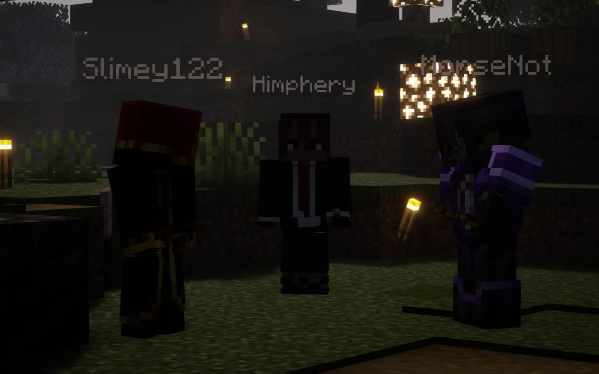

<!DOCTYPE html>
<html lang="ru">

</html>

<head>
    <title>Unburning and Collapse SMP</title>
    <link rel="stylesheet" href="sheet.css">
    <link rel="icon" type="image/x-icon" href="../img/minecraft_logo.ico">
    <meta charset="UTF-8">
    <meta name="viewport" content="width=device-width, initial-scale=1.0">
</head>

<body>

    <div class="header">
        <div class="nav-links" id="navLinks">
            <div class="dropdown">
                <button class="button" onclick="toggleMenu()">&#9776;</button>
                <div class="dropdown-content" id="dropdownMenu">
                    <a href="../chrsheets/soon.html">Кредиты</a>
                    <a href="../index.html#contact">Обратная связь</a>
                    <a href="../chrsheets/soon.html">О нас</a>
                    <a href="../gallery.html">Галерея</a>
                </div>
            </div>

            <a href="../lore.html">Лор</a>
            <a href="../character-bios.html">Анкеты персонажей</a>
            <a href="../index.html">Главная</a>
        </div>
    </div>

    <div class="post">
        

        <h1>Интерлюдия</h1>

        <p>
            <cite>
                — Знаешь, он какой-то подавленный в последнее время...<br>
                                               &#x00A9; Химфери
            </cite>
            <br><br>
            Действительно, разговор будет именно о нём. Химфери хотела сообщить Морзе про подавленное Слайми в последнее
            время, особенно после шоу талантов, на котором у них обеих не было возможности побывать в силу
            обстоятельств.
            <br><br>
            Во время похода в выкопанную Слайми шахту за ресурсами, Хими обнаружила несколько красных ошмётков, похожих
            на их друга. Однако, подозрение быстро покинуло её мысли, не нужно было раньше времени накручивать себя,
            учитывая что все трое, уже несколько недель точно испытывали непонятную, и, довольно нетипичную усталость.
            <br><br>
            Было принято решение,  Морзе самостоятельно посетит его, чтобы проверить эмоциональное состояние, ведь у
            Химфери было незаконченное дело, что стало причиной её ухода.
            Эти ошмётки явно даже не намекали на что-то хорошее...
            <br><br>
            Незамедлительно отправишься домой к Слайму, Морзе обнаружила его сидящим на кровати и смотрящим вниз.
            Беспокойство кольнуло в груди. Морзе, с лёгкой строгостью попросила его обернуться, замечая что у их с Хими
            друга нет глаз, да и в принципе намека на лицо, если его таковым можно было назвать. Осознание пришло не
            сразу. Но, затем, Морзе начала "небольшой" допрос, слегка срываясь, после недавних событий было тяжело
            держать голос ровно. В конечном итоге, ей удалось вытянуть информацию о том, что произошло.
            <br><br>
            <cite>
                — Да, я спрыгнул. Я не знаю зачем. Может, это была безысходность... <br>
                                                     &#x00A9;Слайми
            </cite>
            <br><br>
            Одной из причин такого необдуманного поступка выступило слишком разросшееся пятно, занимавшее уже чуть ли не
            всё тело слайма. После этого оно, правда, уменьшилось. Разумеется, такое действие было рискованным, опасным
            и в той же степени глупым. Отчитывая Слайми, Морзе было тяжело сдерживать нахлынувшие эмоции.
            <br><br>
            С трудом приняв это как факт, во время диалога мельком проскочил вопрос о том, ухаживал ли он вообще за
            своими животными, выяснилось, что кормя животных и используя оставшиеся запасы еды, Слайми понятия не имел
            что именно давать аксолотлям. Но, эти создания столько времени были частью его работы!
            Неужели Они забрали именно эти воспоминания?
            <br><br>
            Когда напряжение между ними немного уменьшилось, они все-таки решили пройтись по парку.
            <br><br>
            <cite>
                — Пообещай, что на днях мы всё расскажем Хими,она должна знать.<br>
                — Хорошо, обещаю. <br>
                                       &#x00A9; Морзе, Слайми
            </cite>
            <br><br>
            После открытия "Sultan store" и убийства Ацоры, наблюдавший шокирующее событие со стороны Слайм и Морзе
            подозвали Химфери на разговор, который, особенно после произошедшего буквально пару мгновений назад, будет
            непростым, но все-таки больше откладывать это нельзя. Дойдя до Слайми, они нашли место поукромнее, где всё и
            сообщили общей подруге, рассказав почему именно его форма полностью лишилась подобия лица. Хими не имела
            слов, которые могли хоть как-то оценить ситуацию
            <br><br>
            Между собравшейся компанией повисла тишина. Увы, что сделано то сделано, изменить это не получиться, однако
            можно предотвратить повторение подобного в будущем. Морзе и Хими решили, что Слайм временно(а может и нет)
            поживёт в другом месте, под их наблюдением, чтобы избежать подобных событий. Спустя непродолжительное время,
            они направились в беседку для обсуждения деталей, где позже и разошлись. Слайми начал собирать вещи для
            скорого переезда.&#92432;⭒๋࣭
            <br><br>
            <span style="color:white;">p.s. текст написан с помощью Слайми</span>
        </p>
    </div>

    <script>
        function toggleMenu() {
            const menu = document.getElementById("dropdownMenu");
            menu.style.display = (menu.style.display === "block") ? "none" : "block";
        }

        // Close the dropdown if the user clicks outside of it
        window.onclick = function (event) {
            if (!event.target.matches('.button')) {
                const dropdowns = document.getElementsByClassName("dropdown-content");
                for (let i = 0; i < dropdowns.length; i++) {
                    const openDropdown = dropdowns[i];
                    if (openDropdown.style.display === "block") {
                        openDropdown.style.display = "none";
                    }
                }
            }
        }

    </script>
</body>